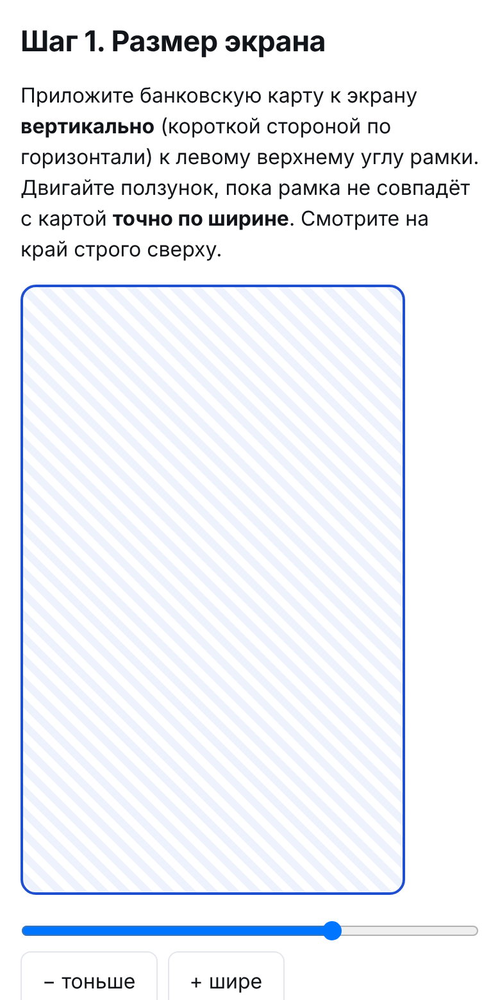
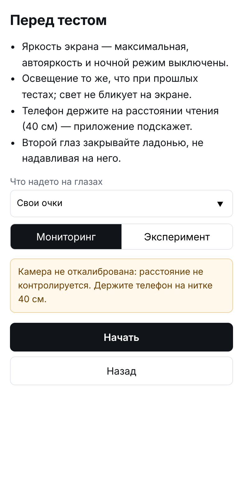
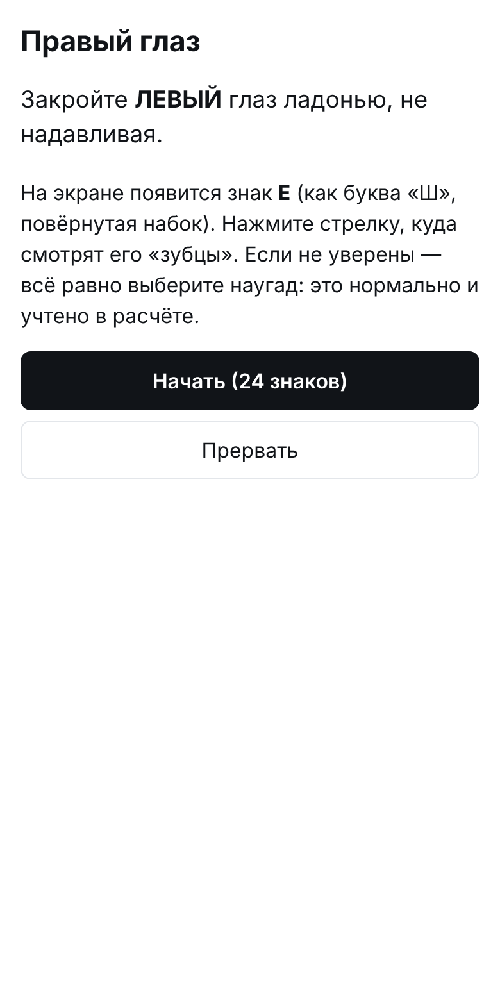
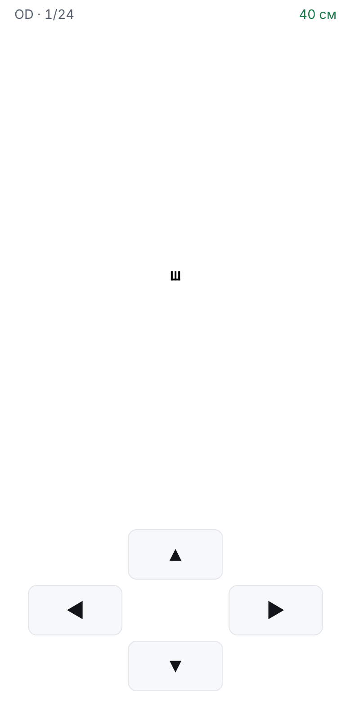
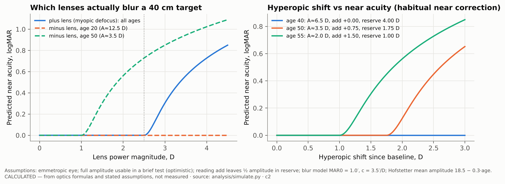
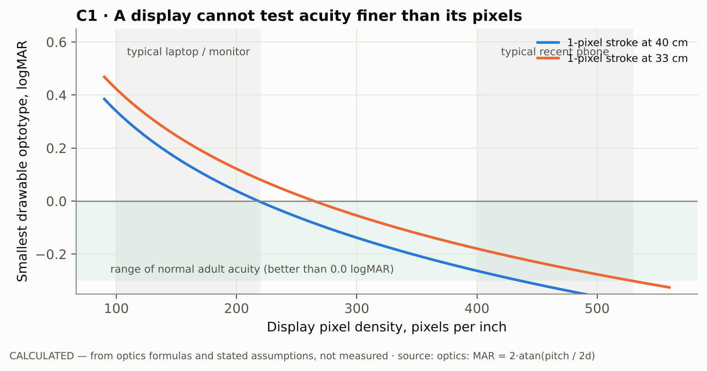
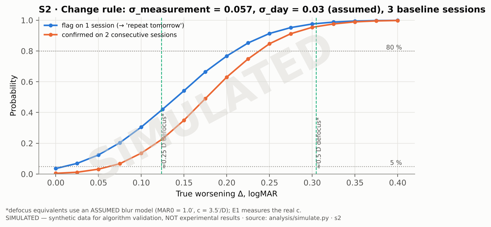
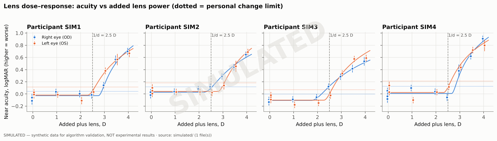
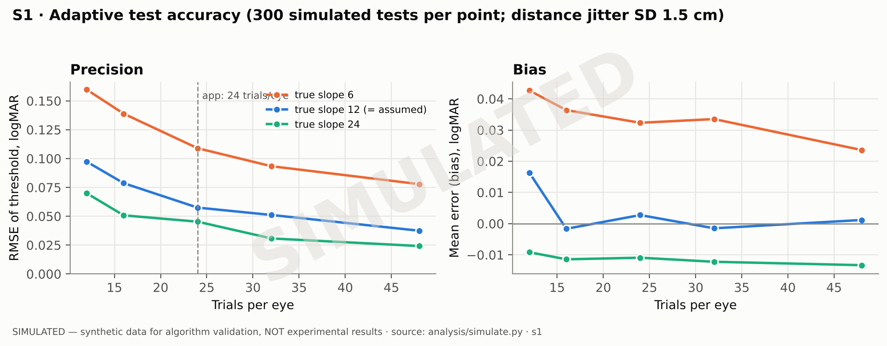
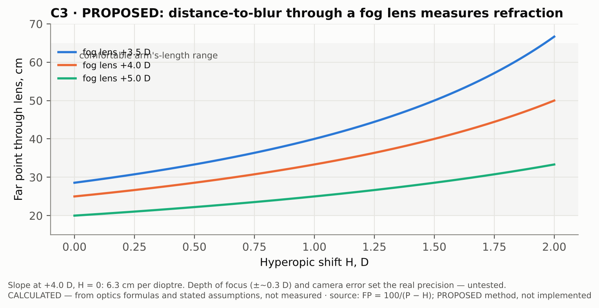

Астронавт сам, за две минуты и без оператора с Земли, проверяет, не ухудшилось ли его зрение вблизи. Сравнение идёт не с «нормой для всех», а с его собственным разбросом.
Телефон показывает уменьшающиеся знаки E на расстоянии чтения, каждому глазу отдельно. Фронтальная камера следит, чтобы до глаз оставалось 40 см, и пересчитывает размер знака под фактическое расстояние.
В невесомости жидкость смещается к голове. У части экипажа задняя стенка глаза уплощается, диск зрительного нерва отекает, появляются складки сосудистой оболочки. NASA называет этот комплекс SANS, spaceflight-associated neuro-ocular syndrome. Глаз становится «короче», и его оптика сдвигается в сторону дальнозоркости, поэтому первым страдает зрение вблизи.
На МКС остроту зрения проверяют по таблице на бортовом ноутбуке. Ход теста и результаты фиксирует наземный оператор [5,6], а приборов для измерения рефракции на борту нет [4]. При задержке связи с Марсом от 3 до 22 минут в одну сторону такой формат не работает.
Чего проект не делает. Он не обнаруживает SANS: отёк диска и складки находят снимками (ОКТ, МРТ, осмотр глазного дна), и часто они протекают без симптомов. Проект измеряет только одно следствие, функциональное зрение вблизи. Его исправляют очки: NASA уже выдаёт экипажу запасные пары нарастающей силы [3].
Гипотеза. Короткий самостоятельный тест на телефоне с контролем расстояния и личной нормой обнаруживает ухудшение зрения вблизи, когда оно превышает собственный разброс человека, и сигнал растёт с силой оптической расфокусировки.




Всё работает на телефоне и без сети: модель распознавания лица (MediaPipe, Apache-2.0) и её среда выполнения входят в приложение. Изображения с камеры никуда не уходят и не сохраняются. В журнал пишутся только числа.
В исходной идее проверка «за вечер» звучала так: надеть очки известной силы и убедиться, что программа ловит ухудшение. Оптический расчёт показал, что с любыми очками это не сработает.

Отсюда исправленный протокол. Его нужно подтвердить до начала опытов, все критерии зафиксированы заранее (docs/02_protocol.md):
| Опыт | Что проверяет | Как | Критерий успеха | Статус |
|---|---|---|---|---|
| E0 | Камера держит расстояние | 30–50 см по рулетке, глаз открыт / закрыт ладонью, 15 точек на участника | пределы согласия ±2 см (±0,02 logMAR) | не проведён |
| E1 | Тест ловит оптическое ухудшение | аптечные очки +1,0 … +4,0 D в случайном порядке, 3 прогона без линз; ≥ 3 участника | +1/+2 D: нет срабатываний у ≥ 80 % глаз; +3,5/+4 D: срабатывание у ≥ 80 %; рост с силой линзы | не проведён |
| E2 | Собственный разброс между днями | 1 тест в день, 5–7 дней | измерить Sw; пересмотреть σ0, если Sw > 0,08 | не проведён |
| E3 | Сценарий SANS | 50+ лет, минусовые линзы −0,5 … −1,5 D | срабатывание после исчерпания запаса аккомодации | по возможности |
Оборудование: телефон с плотностью ≥ 400 ppi и фронтальной камерой, банковская карта, рулетка, набор очков для чтения. Линзы до +2,5 D служат встроенным контролем: если на них программа «срабатывает», она ошибается.
Ориентация и ответ; запрошенный и фактический размер (logMAR); толщина штриха в физических пикселях и миллиметрах; расстояние в начале и в момент ответа; три независимые оценки расстояния (две радужки, межзрачковое); время реакции; средняя яркость кадра как показатель освещения. Экспорт в JSON и CSV, у каждой записи метка категории данных.
Психометрическая функция четырёхальтернативного выбора: угадывание 25 %, промахи 2 %, наклон 12/logMAR (допущение, проверено в S1). Порог — апостериорное среднее по сетке с равномерным априорным распределением. Оно пересчитывается из сырых попыток: Python совпадает с приложением с точностью до 10⁻¹⁵.
Сжатие разброса к σ0 защищает от случайно «слишком ровной» нормы из трёх сессий: без него норма давала бы ложные тревоги. Порог односторонний, потому что важно только ухудшение.

Экспериментальных результатов пока нет. Ни один опыт с людьми не проводился. Ниже проверки программы и алгоритмов. Графики эксперимента построятся тем же кодом из реальных экспортов (python analysis/run_analysis.py).
| Проверка | Категория | Результат |
|---|---|---|
| Размер нарисованных знаков: 48 знаков в Chromium, эмуляция 460 ppi, размер считан из пикселей canvas | MEASURED программная проверка | ошибка ≤ 1,6 % (≈ 0,006 logMAR); ориентация 48/48 |
| Порог из сырых попыток: Python против приложения | CALCULATED | расхождение < 1e-15 logMAR |
| Точность теста, 24 знака/глаз, наклон 12, 300 симуляций | SIMULATED | RMSE 0,057; смещение +0,003 logMAR |
| Ложные тревоги правила, 20 000 симуляций на точку | SIMULATED | 3,6 % за сессию; 0,5 % при двух подряд |
| 80 % вероятность обнаружения | SIMULATED | при ухудшении 0,21 (одна сессия) / 0,24 logMAR (две) |
| Тесты кода | — | TypeScript 9/9, Python 6/6, сквозной тест: пройден |



Подтверждено, что программа делает то, что заявлено: рисует знак нужного физического размера, пересчитывает его под фактическое расстояние, воспроизводимо считает порог и применяет правило с известной частотой ложных тревог. Гипотезу о людях это пока не подтверждает: данных о людях нет.
NASA уже снабжает экипаж запасными очками, и с правильной коррекцией зрение остаётся нормальным [3]. Практическая ценность проекта в другом: астронавт объективно и сам понимает, когда пора менять очки, и отличает ухудшение, которое исправляется оптикой, от того, которое не исправляется (тест в более сильных очках). Второе — повод срочно связаться с врачом.

Код, протокол, аудит материалов и скрипты анализа находятся в репозитории capitalisming/Vision: app/ (приложение), analysis/ (обработка и графики), docs/ (аудит, протокол, реестр опытов, результаты).